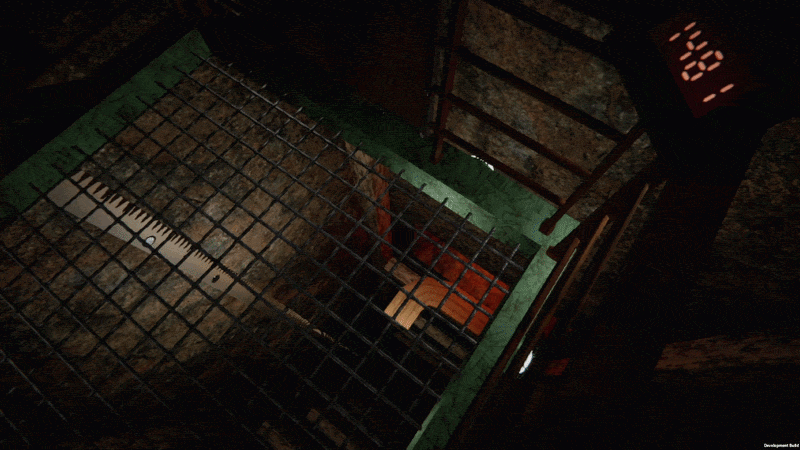

Elevator Traversal & Tension System
Engineered a custom elevator traversal system designed to make vertical movement feel heavy, unstable, and dangerous. The system uses asymmetric acceleration, braking, slip behavior, and layered movement audio to create tension during the descent.
- Asymmetric acceleration and braking for weighty elevator movement
- Slip behavior to create moments of instability during traversal
- Layered movement audio to reinforce mechanical strain
- Tuning focused on tension, readability, and player anticipation
Gameplay Systems
Traversal
Game Feel
Audio Feedback